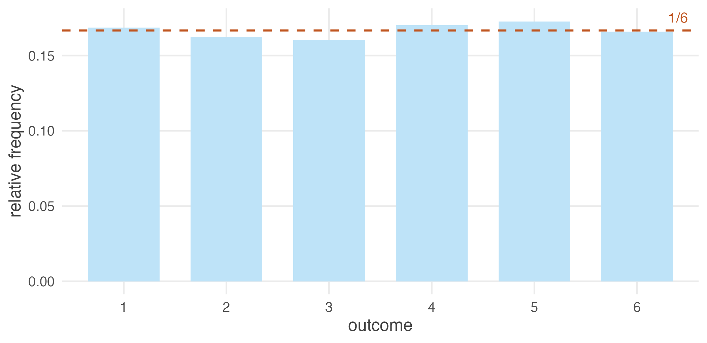

1.3 What a distribution actually is
A distribution is a pattern that emerges from repetition under randomness. It tells you which outcomes are common, which are rare, and where values tend to concentrate.
The key word is repetition. A single observation has no distribution. Roll a die once and you get a four; that tells you almost nothing. To see the pattern you must roll again and again, recording outcomes, until the shape appears.
#> rolls
#> 1 2 3 4 5 6
#> 0.169 0.162 0.160 0.170 0.173 0.166
Figure 1.1: Ten thousand rolls of a fair die. Each face turns up close to one-sixth of the time.
Each face appears roughly one-sixth of the time. That pattern is the distribution of a fair die, and it became visible only through repetition.
1.3.1 Randomness is not optional
Now take the randomness away. Imagine a die with a 3 on every face.
#> rolls_fixed
#> 3
#> 10000#> [1] 0Every observation is identical. No spread, no uncertainty, standard deviation exactly zero. The distribution has collapsed onto a single point — what is called a degenerate distribution.
A distribution is not a property of a single observation. It is a property of repeated observations generated by a random process.
Where there is no randomness there is nothing to describe, nothing to be uncertain about, and no statistics to do. Every technique in this book is a way of handling variation. Remove the variation and the entire subject falls silent.
This is why statistics is built on random variables — quantities whose value depends on the outcome of a random process. Height, income, rainfall, the number on a die: all vary, and it is precisely their variation that we model.
1.3.2 Expectation as a long-run average
If a random variable takes value \(x_i\) with probability \(p(x_i)\), its expected value is
\[E[X] = \sum_i x_i \, p(x_i)\]
The name invites a misunderstanding. \(E[X]\) is not the value you expect on any given try — for a fair die it is 3.5, a number the die cannot produce. It is the long-run average over many repetitions.
#> [1] 3.514#> [1] 3.5That the two agree is neither a coincidence nor trivial. It is the first appearance of the Law of Large Numbers, which we will meet properly later: run a random process enough times and the average of what you observe closes in on the expectation you calculated on paper.
Notice how unremarkable that felt. We are about to need it for something much less obvious.